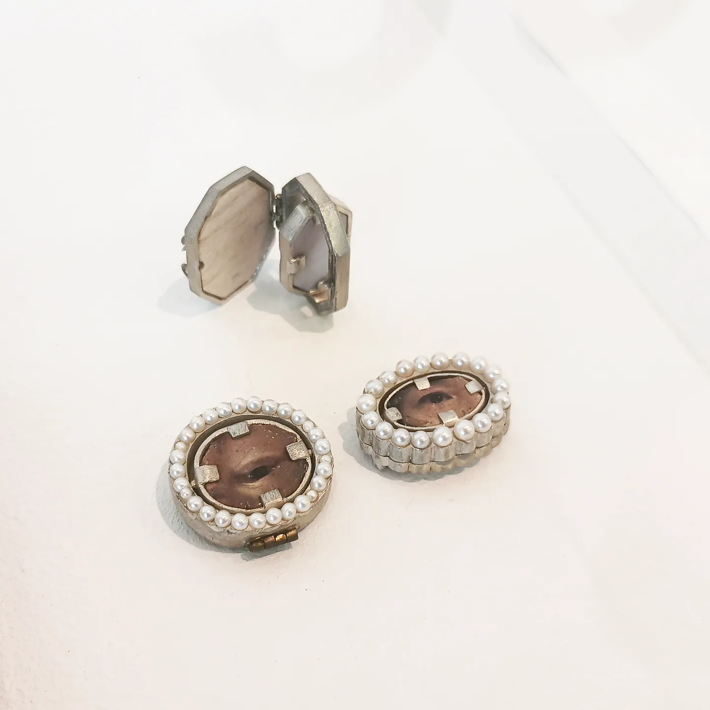

Intimate Gaze, 2021

Zihan Zhou
Intimate Gaze, 2021
Brooches
Dimensions: varisized.
Material: silver, pearl, canvas, wood, stainless steel wire.
Intimate Gaze is a series of jewellery pieces designed for Intimate Relationships Programme directed by Felicia Li, Vonmo Studio from 2020 to 2021. In this project I interduce the image of "lover's eye jewellery" in 18th century Europe, which has been used as secret pledges between lovers. I made 3 brooches with a double-sided mechanism, of which one side is portrait of the eye of my family, the other is a flat surface made by pink seashell. When wearing these brooches, I (or the wearer) can choose either side to face outwards, symbolizing that I am making my family's eyes "watching" or "stop watching" my life. With this design, the Intimate Gaze brooch expresses my reflection, as an only child born in the 1990s in China, on the excessive attention paid to us by the family, as well as my re-understanding and expectation to improve the family relationship in this generation.